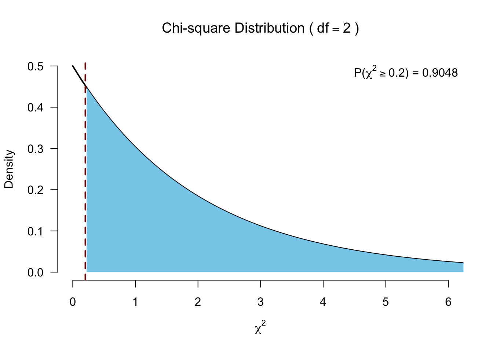

Friedman’s ANOVA
Paired >2 samples
Friedman’s ANOVA
Created by William Frederick Friedman the Friedman’s ANOVA is a nonparametric alternative to the repeated one-way ANOVA.
Just like the Kruskal-Wallis test, Friedman’s ANOVA, subtracts the expected mean ranking from the calculated observed mean ranking, which is also \(\chi^2\) distributed.
The data
Assign ranks
Rank within each participant (i.e., within each row).
# Rank for each person
ranks <- t(apply(data, 1, rank))The data with ranks
Calculate \(F_r\)
\[F_r = \left[ \frac{12}{Nk(k+1)} \sum_{i=1}^k R_i^2 \right] - 3N(k+1)\]
- \(N\) total number of subjects
- \(k\) number of groups
- \(R_i\) rank sums for each group
–> We sum the ranks for each of the three experimental conditions (and apply some standardizations).
Calculate \(F_r\)
Calculate ranks sum per condition and \(N\).
R.i <- apply(ranks, 2, sum)
R.iT0_R T1_R T2_R
19 20 21 # N is number of participants
N <- 10Calculate \(F_r\) (without adjusting for ties)
\[F_r = \left[ \frac{12}{Nk(k+1)} \sum_{i=1}^k R_i^2 \right] - 3N(k+1)\]
k <- 3
F.r <- ( ( 12/(N*k*(k+1)) ) * sum(R.i^2) ) - ( 3*N*(k+1) )
F.r[1] 0.2Adjusting for ties (just for fun)
\[ \frac{(k-1) \sum_i^k (R_i - \frac{b(k+1))}{2})^2}{\sum_i^b \sum_j^k (R_{ij}^2) - \frac{bk(k+1)^2}{4}} \]
k <- 3
b <- 10
F.r <- (sum ((R.i - ((b*(k+1))/2) )^2) * (k-1)) / (sum((ranks^2)) - (b*k *(k+1)^2) / 4)
F.r[1] 0.2And the degrees of freedom
df <- k - 1Test for significance

Post hoc tests?
- Conover test
- Follow up with Wilcoxon signed-rank tests!